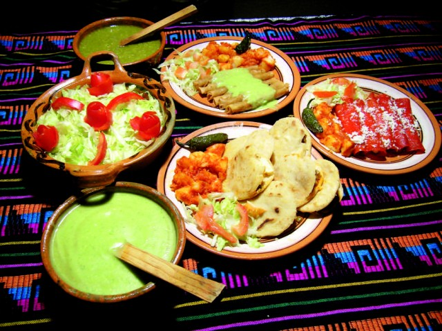

Sabemos que existen pocos placeres en la vida tan importantes como lo es el comer, por eso nosotros nos especializamos en de la manera
mas mexicana que pudimos, hacemos antojitos mexicanos. Los antojitos son una de las comidas mas queridas en todo el mundo; nuestra gastronomia
es una de dos que es considerada patrimonio de la humanidad. Han sido pocas las variaciones que ha tenido nuestra gastronomia a lo largo de
los años, pocos paises en el mundo pueden decir eso. En nuestro restaurante tenemos diferentes platillos, todos muy nuestros, muy mexicanos.
Algunas de las ordenes que surtimos a nuestros clientes son:
